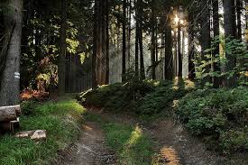

Diferentes Tipos De Ecosistemas
Nuestro planeta es un lugar lleno de vida. Sin embargo,
cada espacio tiene unas características de flora y fauna particulares.
A estos espacios es a lo que se denomina ecosistema y está formado por el conjunto de seres vivos que se
relacionan con el medio y entre sí. En la Tierra existen una gran diversidad de ecosistemas naturales,
tanto terrestres como acuáticos.

Bosques
Son los ecosistemas terrestres que cuentan
con una mayor riqueza en su biodiversidad precisamente
debido a lo frondoso de la flora que los caracteriza.
Selvas
Se trata de un tipo de bosque frondoso que destaca por
ser el ecosistema donde la riqueza de la biodiversidad es más
abundante. Se localizan en zonas tropicales y subtropicales y
están asociadas a zonas muy húmedas y muy lluviosas. Un buen
ejemplo de este tipo de ecosistema terrestre lo encontramos
en la selva del Amazonas.

Taiga
Se trata del primero de los bosques de coníferas.
Suelen ubicarse en zonas frías, lo que implica una
biodiversidad menor. El suelo de la taiga presenta musgos de
diversos tipos, así como líquenes. Lo encontramos principalmente
en países como Canadá y Rusia, así como en la península Escandinava.
Conocer mas